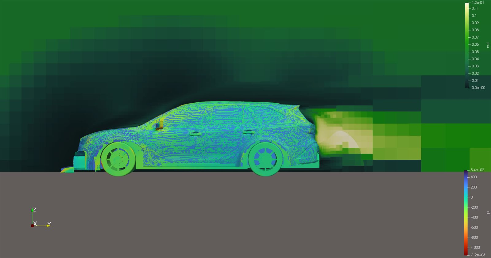
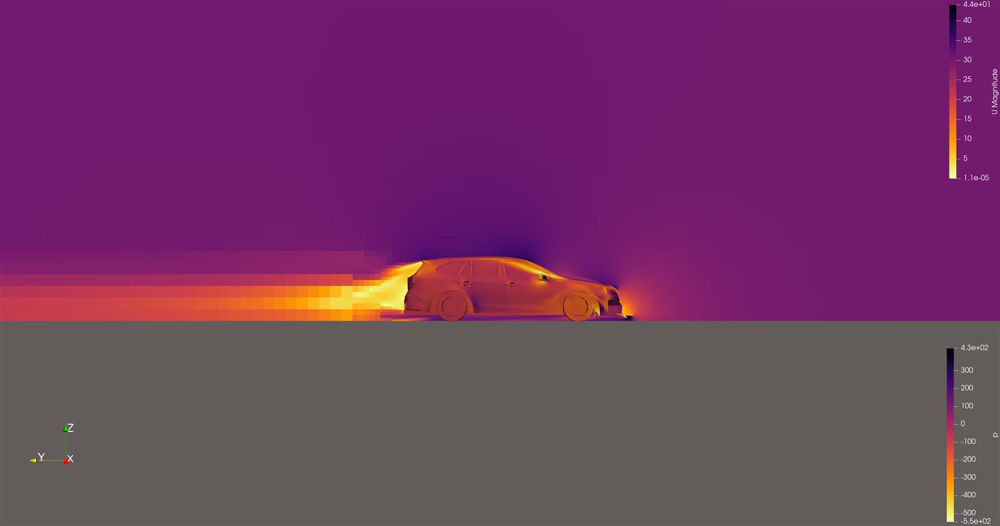

A custom-built vehicle model, taken through two design/geometry iterations with measured drag improvement between them.
External aerodynamic simulation of a 2022 Subaru Outback XT, built as a custom CAD model rather than sourced from an existing mesh library. The model was built in Blender, then dimensionally checked against a real trim-level parts/build-list spreadsheet to keep it faithful to an actual production configuration rather than a generic stand-in shape. Separate wheel, front-vent, and engine-block geometry were modeled, suggesting an attempt at at least partial underhood cooling-flow detail, not just an external shell.
Subaru Outback 2022.blend),
exported to STL/OBJ, with separate front/rear wheel, front-vent, and
engine-block surfaces. A second geometry revision was produced in
Fusion 360 (naming convention: "obxt" = Outback XT, "Rev1" for the
revised pass).
simpleFoam) is the standard, near-universal
choice for this class of problem and the best-supported inference
from the visualized fields (steady-looking contours, no
timestep-dependent transient artifacts).
Two distinct sets of force coefficients survive, corresponding to the Blender-based initial geometry and the Fusion-360-refined revision:
| Rev 1 (Blender) | Rev 2 (Fusion 360 refined) | |
|---|---|---|
| Cd | 0.417 | 0.352 |
| Cl | -0.651 | -0.351 |
| Cl, front axle | -0.425 | -0.344 |
| Cl, rear axle | -0.226 | -0.007 |
| Cm | -0.099 | -0.169 |
Drag dropped substantially (0.417 → 0.352) and total lift magnitude roughly halved between the two geometry passes, with nearly all of the remaining lift concentrated at the front axle in the revised geometry (rear-axle contribution dropped to essentially zero). For context, production Outback-class wagons typically report factory Cd figures in the 0.32–0.34 range, so 0.352 reads as a plausible, credible converged estimate, while 0.417 looks like an early/rough-geometry overestimate that the geometry revision corrected.
forceCoeffsDict survives from either run, some of the
difference could in principle reflect changed reference parameters
rather than purely the geometry revision. Presented here as the most
likely explanation, not a certainty.

